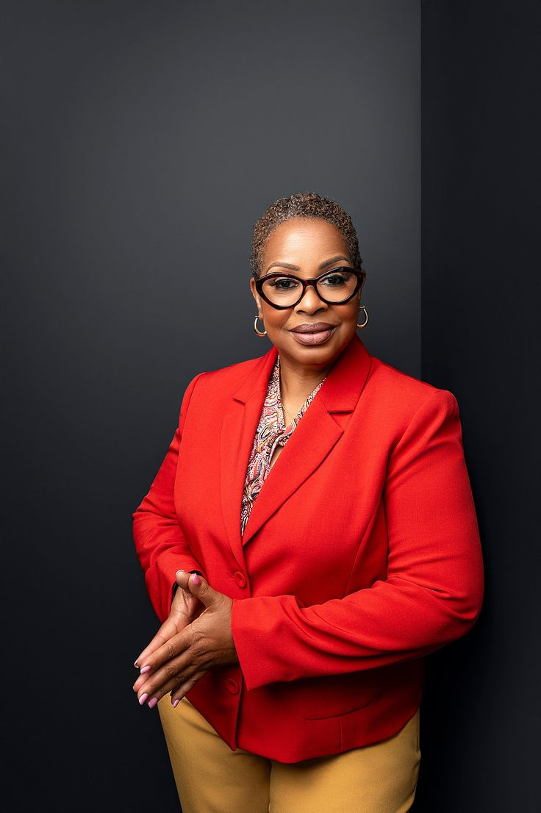

Welcome to Academic Tutoring
Unlock your potential with our professional tutors
Meet Our Tutors
Alice Owen
Subject Specialization: Mathematics and Physics
Qualifications: MSc in Physics from the University of Nairobi
Experience: Over 5 years of tutoring experience
Approach: Jane focuses on making complex concepts simple and relatable. She uses real-world examples to help students understand the applications of mathematics and physics.
Personal Note: Jane believes in the power of education to transform lives and is passionate about helping her students achieve their academic goals.
Choge Victor

Subject Specialization: History and Geography
Qualifications: MA in History from the University of Nairobi
Experience: 6 years of teaching and tutoring
Approach: David uses storytelling and multimedia resources to bring history and geography to life for his students.
Personal Note: David believes that understanding history and geography is crucial for becoming informed and responsible global citizens.
Bella Sawe
Subject Specialization: English Literature and Creative Writing
Qualifications: BA in English Literature from Kenyatta University
Experience: 3 years of tutoring and mentoring
Approach: John encourages critical thinking and creativity in his students. He uses engaging texts and writing exercises to foster a love for literature.
Personal Note: John is dedicated to helping students find their unique voice and develop their writing skills.
Josh Muthomi

Subject Specialization: Biology and Chemistry
Qualifications: BSc in Biological Sciences from JKUAT
Experience: 4 years of tutoring experience
Approach: Mary uses interactive methods and hands-on experiments to make learning science fun and engaging.
Personal Note: Mary is passionate about science education and aims to inspire her students to pursue careers in the sciences.
Meera Bahoor
Subject Specialization: History and Geography
Qualifications: MA in History from the University of Nairobi
Experience: 6 years of teaching and tutoring
Approach: David uses storytelling and multimedia resources to bring history and geography to life for his students.
Personal Note: David believes that understanding history and geography is crucial for becoming informed and responsible global citizens.
Melvin Sakaja

Subject Specialization: History and Geography
Qualifications: MA in History from the University of Nairobi
Experience: 6 years of teaching and tutoring
Approach: David uses storytelling and multimedia resources to bring history and geography to life for his students.
Personal Note: David believes that understanding history and geography is crucial for becoming informed and responsible global citizens.
Moody Leroy

Subject Specialization: History and Geography
Qualifications: MA in History from the University of Nairobi
Experience: 6 years of teaching and tutoring
Approach: David uses storytelling and multimedia resources to bring history and geography to life for his students.
Personal Note: David believes that understanding history and geography is crucial for becoming informed and responsible global citizens.
Relvin Opar

Subject Specialization: History and Geography
Qualifications: MA in History from the University of Nairobi
Experience: 6 years of teaching and tutoring
Approach: David uses storytelling and multimedia resources to bring history and geography to life for his students.
Personal Note: David believes that understanding history and geography is crucial for becoming informed and responsible global citizens.